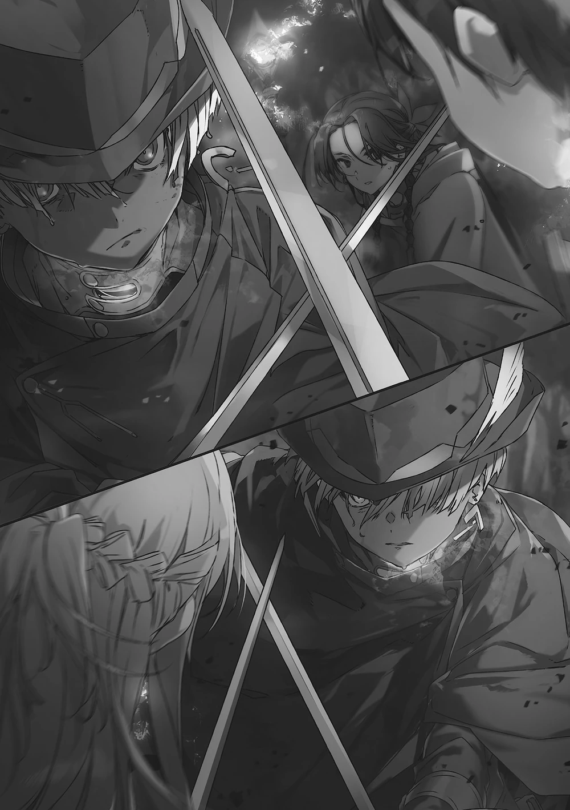
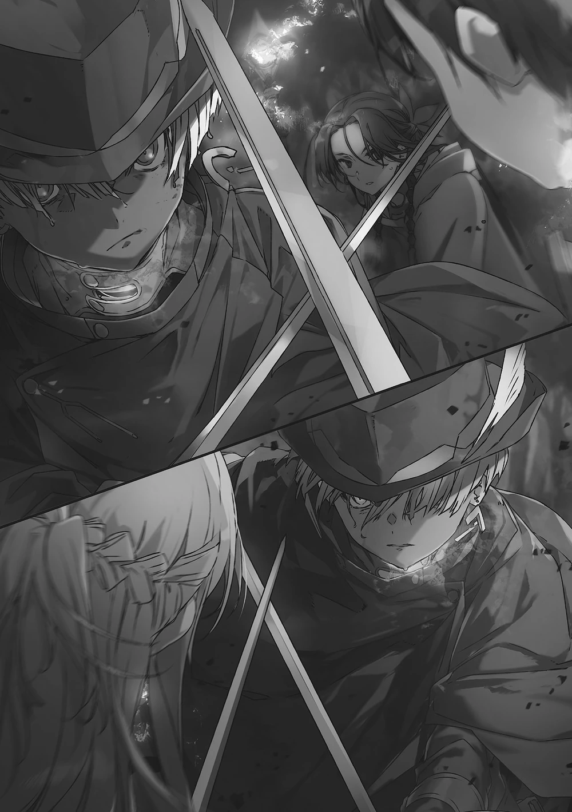

Sword Art Online Volume 25 - Unital Ring IV
Sinopsis
El telón finalmente se levanta para la batalla predestinada contra Mutasina de la 《Sociedad de Investigación Virtual》 ――
El encuentro casual con Eolyne, el hombre enmascarado con los mismos ojos y voz que su difunto amigo, ha dejado a Kirito en un estado de profundo shock. Sin embargo, el niño no puede darse el lujo de ahogarse en el sentimentalismo mientras los incidentes se agravan en dos mundos virtuales al mismo tiempo.
"Quizás este podría ser el comienzo de una nueva guerra de otro mundo"
Un presagio de otro disturbio inminente azota a 《Underworld》 después de 200 años.
Mientras tanto, la batalla predestinada contra Mutasina de la 《Sociedad de Investigación Virtual》 se acerca en 《Unital Ring》. Bajo su liderazgo hay un batallón de cien jugadores, atados bajo su mando por el horroroso hechizo de asfixia 《Choker of the Damned》. En el lado opuesto, Kirito y compañía planean sus próximos movimientos para revertir la situación abrumadoramente desfavorable, pero...
Ilustraciones
Las siguientes son las ilustraciones que se incluyen en el volumen 25:
 
